Sessão 9: Clouds privadas com o OpenStack
1) Instalação do Ubuntu Server
-
Crie uma mídia bootável com o instalador do Ubuntu Server, conforme instruções providas pelo instrutor. Em seguida, insira a mídia na máquina destacada como hypervisor para a dupla e execute o boot via USB. Você verá a tela a seguir:
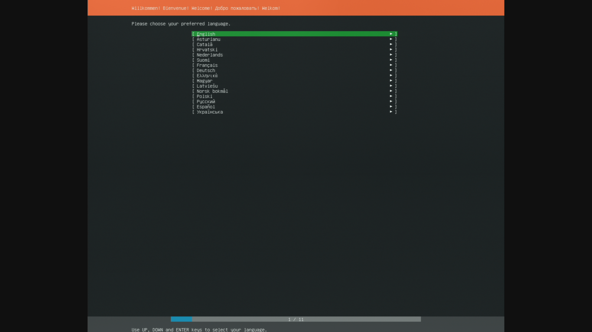Figure 1. Instalação do Ubuntu Server, parte 1Escolha a linguagem de instalação como inglês (English) e prossiga.
-
Escolha o layout do teclado e variante como Portuguese (Brazil).
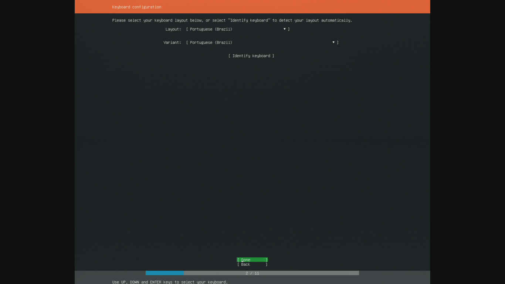Figure 2. Instalação do Ubuntu Server, parte 2 -
Selecione a versão tradicional, Install Ubuntu.
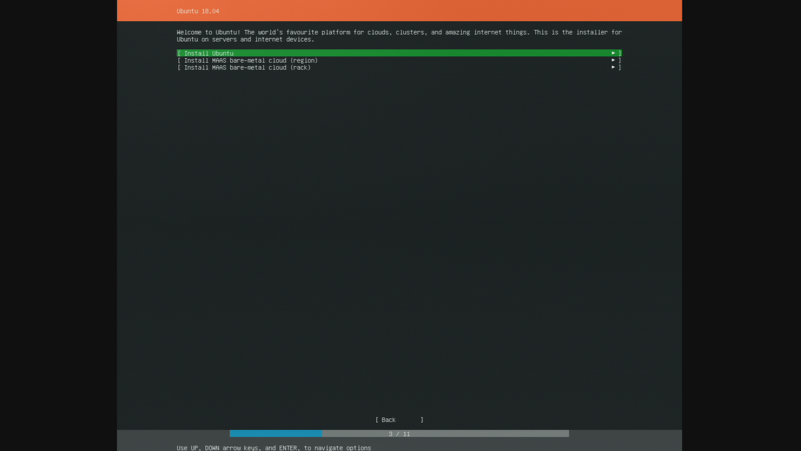Figure 3. Instalação do Ubuntu Server, parte 3 -
Para a configuração de rede, mantenha o IP automático obtido via DHCP e prossiga.
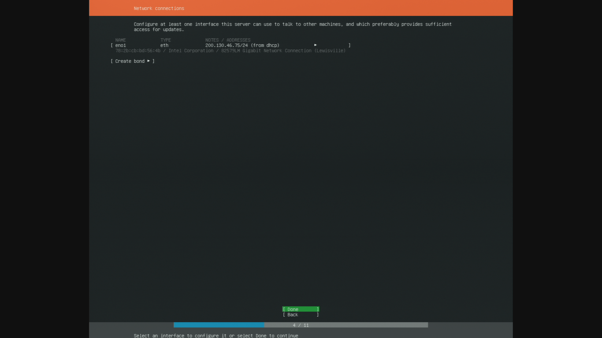Figure 4. Instalação do Ubuntu Server, parte 4Mantenha a configuração de proxy vazia.
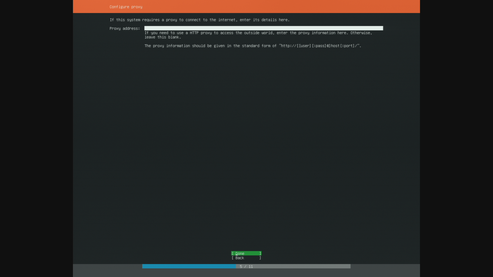Figure 5. Instalação do Ubuntu Server, parte 5Não é necessário alterar o mirror padrão de instalação de pacotes de Ubuntu.
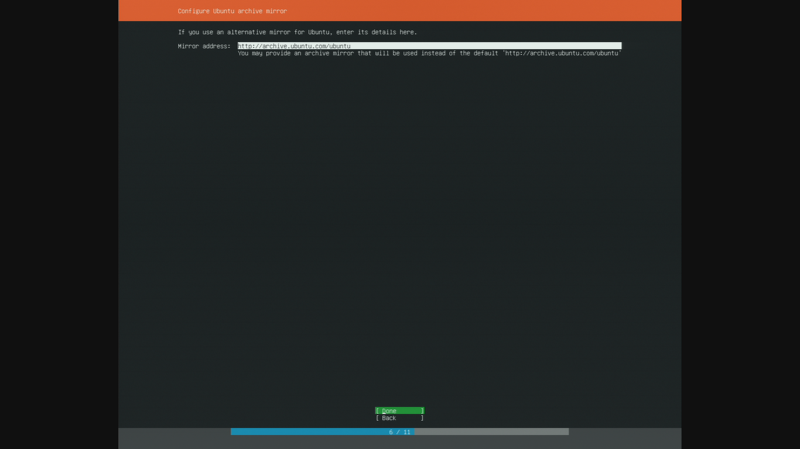Figure 6. Instalação do Ubuntu Server, parte 6 -
Na configuração de disco, selecione Use An Entire Disk And Set Up LVM.
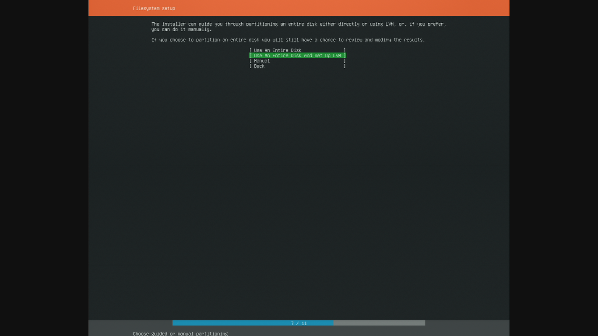Figure 7. Instalação do Ubuntu Server, parte 7Selecione o único disco disponível para instalação.
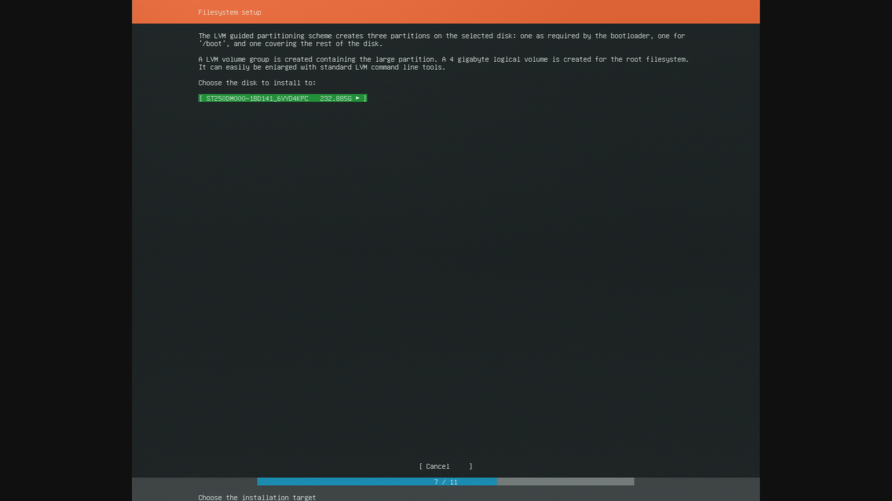Figure 8. Instalação do Ubuntu Server, parte 8Teremos que alterar o tamanho padrão da partição raiz (
/). Mova o cursor para o volumeubuntu-lve pressioneENTER.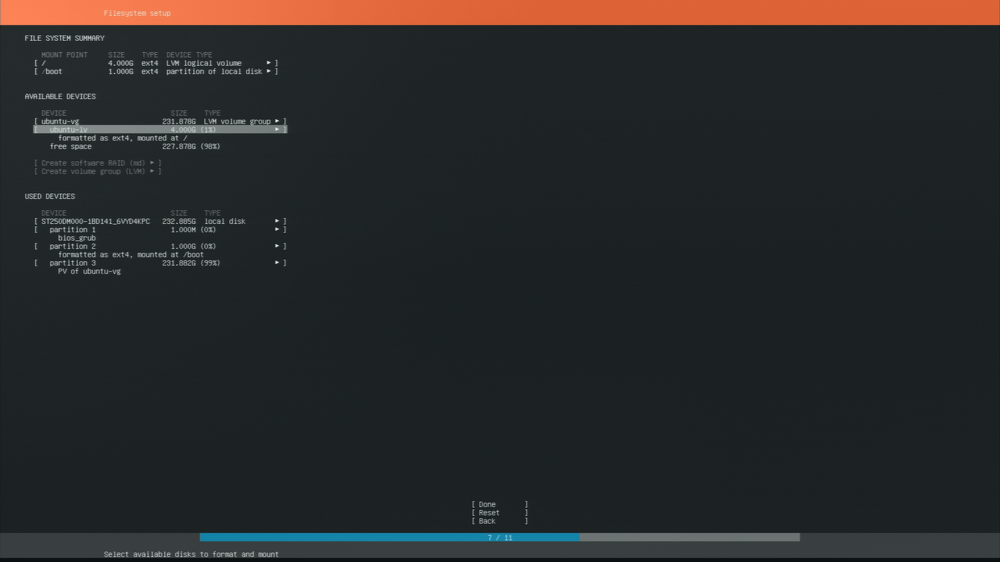Figure 9. Instalação do Ubuntu Server, parte 9Na nova tela, edite o tamanho da partição para 50 GB e selecione Save.
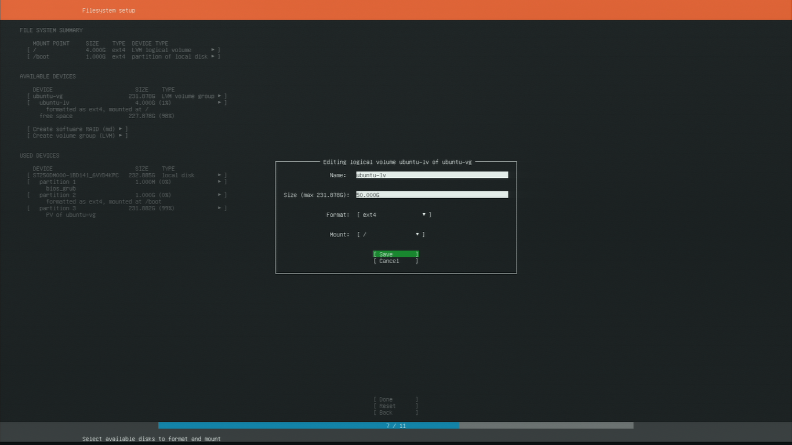Figure 10. Instalação do Ubuntu Server, parte 10Revise as configurações de disco, e selecione Done. .Instalação do Ubuntu Server, parte 11
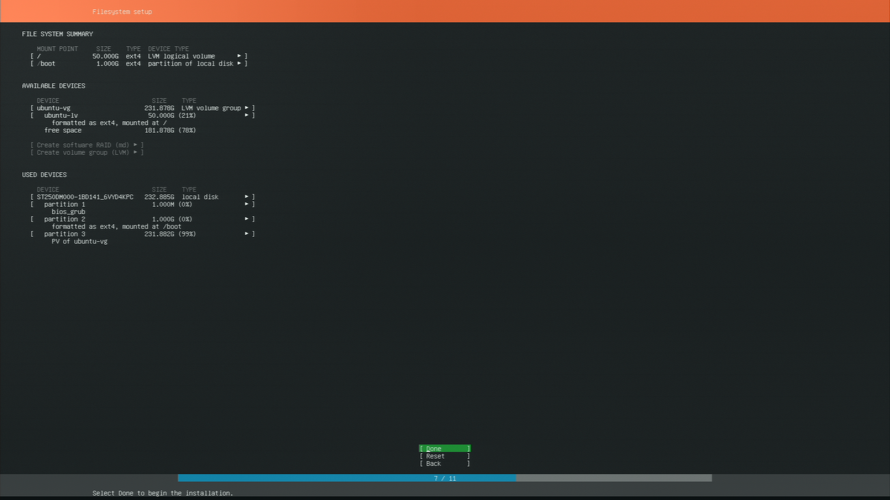O sistema irá solicitar confirmação para formatar o disco. Selecione Continue.
 Figure 11. Instalação do Ubuntu Server, parte 12
Figure 11. Instalação do Ubuntu Server, parte 12 -
Agora, defina um usuário não-privilegiado (
aluno), hostname da máquina (sugestão:ostk-dX-gX) e senha para o usuário.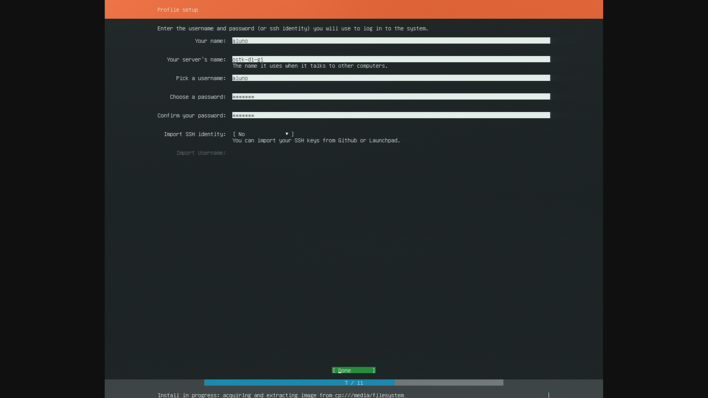Figure 12. Instalação do Ubuntu Server, parte 13 -
Faremos a instalação de pacotes adicionais manualmente depois, então não é necessário instalar nenhum snap. Selecione Done.
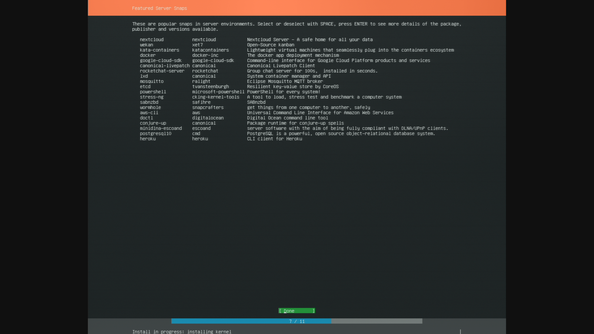Figure 13. Instalação do Ubuntu Server, parte 14 -
Acompanhe o progresso de instalação do sistema.
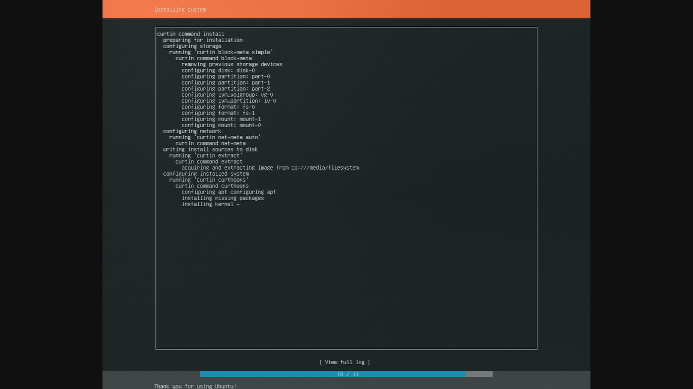Figure 14. Instalação do Ubuntu Server, progressoUma vez concluído, selecione Reboot Now. Retire a mídia de instalação e reinicie a máquina para bootar no sistema.
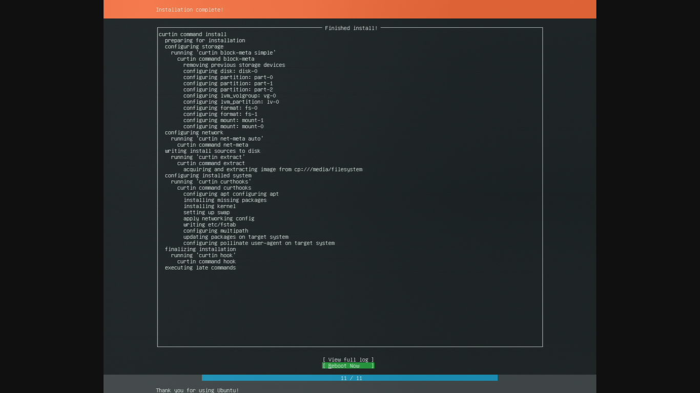Figure 15. Instalação do Ubuntu Server, concluída
2) Instalação do OpenStack
-
Para instalar o OpenStack, acesse o servidor via SSH usando o PuTTY ou Cygwin. Logue como o usuário
aluno, fornecendo a senha configurada durante o processo de instalação.adr-010@DESKTOP-3GP5RKE ~ $ ssh aluno@200.130.46.89 The authenticity of host '200.130.46.89 (200.130.46.89)' can't be established. ECDSA key fingerprint is SHA256:8cHD89hWRgYFBm4zsTzBwRGMPYWKNPPZz7gn5tShuTs. Are you sure you want to continue connecting (yes/no)? yes Warning: Permanently added '200.130.46.89' (ECDSA) to the list of known hosts. aluno@200.130.46.89's password: Welcome to Ubuntu 18.04.1 LTS (GNU/Linux 4.15.0-42-generic x86_64) * Documentation: https://help.ubuntu.com * Management: https://landscape.canonical.com * Support: https://ubuntu.com/advantage System information as of Thu Dec 6 13:22:34 UTC 2018 System load: 0.68 Processes: 143 Usage of /: 47.1% of 3.87GB Users logged in: 1 Memory usage: 1% IP address for eno1: 200.130.46.89 Swap usage: 0% 127 packages can be updated. 51 updates are security updates. Last login: Thu Dec 6 13:22:09 2018 To run a command as administrator (user "root"), use "sudo <command>". See "man sudo_root" for details. aluno@ostk-d1-g1:~$
-
Vamos atualizar a máquina, antes de mais nada. Use o comando
sudo -ipara virar o usuárioroot:aluno@ostk-d1-g1:~$ sudo -i [sudo] password for aluno: root@ostk-d1-g1:~#
Agora, atualize via
apt-get:root@ostk-d1-g1:~# apt-get update ; apt-get -y dist-upgrade
Findo o processo de atualização, reinicie a máquina se houverem sido realizadas atualizações ao kernel do sistema.
root@ostk-d1-g1:~# reboot
-
Vamos usar um usuário dedicado para instalar o OpenStack. Crie-o:
root@ostk-d1-g1:~# useradd -s /bin/bash -d /opt/stack -m stack
Dê permissões de execução de comandos privilegiados para o usuário
stack:root@ostk-d1-g1:~# echo "stack ALL=(ALL) NOPASSWD: ALL" | sudo tee /etc/sudoers.d/stack
Finalmente, use o comando
supara alternar para esse usuário:root@ostk-d1-g1:~# su - stack
stack@ostk-d1-g1:~$ whoami stack
-
Vamos usar o script de instalação facilitada do OpenStack, denominado DevStack. Para isso, clone seu repositório usando o comando
git, e em seguida entre na pasta:stack@ostk-d1-g1:~$ git clone https://git.openstack.org/openstack-dev/devstack ; cd devstack
Configure uma senha de acesso padrão às interfaces e bases de dados do OpenStack usando um arquivo
local.conf. O comando abaixo irá populá-lo automaticamente:stack@ostk-d1-g1:~$ cat <<EOF > local.conf [[local|localrc]] ADMIN_PASSWORD=Virt3sr DATABASE_PASSWORD=$ADMIN_PASSWORD RABBIT_PASSWORD=$ADMIN_PASSWORD SERVICE_PASSWORD=$ADMIN_PASSWORD EOF
-
O DevStack irá instalar uma série de pacotes durante sua execução, muitos dos quais se encontram na seção
multiversedos repositórios do Ubuntu. Adicione esse seção à base doapt:stack@ostk-d1-g1:~$ sudo add-apt-repository universe
-
Tudo pronto! Execute o script
stack.shpara instalar o OpenStack:stack@ostk-d1-g1:~$ ./stack.sh (...) This is your host IP address: 200.130.46.21 This is your host IPv6 address: 2001:12f0:b05::279 Horizon is now available at http://200.130.46.21/dashboard Keystone is serving at http://200.130.46.21/identity/ The default users are: admin and demo The password: Virt3sr WARNING: Using lib/neutron-legacy is deprecated, and it will be removed in the future Services are running under systemd unit files. For more information see: https://docs.openstack.org/devstack/latest/systemd.html DevStack Version: stein Change: 7cc83a01caa70786bf6de6f272c1187da37be3a3 Merge "Setup branch in setup-devstack-source-dirs" 2018-12-07 00:35:19 +0000 OS Version: Ubuntu 18.04 bionic 2018-12-07 11:53:15.849 | stack.sh completed in 3249 seconds.
O processo de instalação é bastante demorado, então seja paciente. No exemplo acima, note que o tempo total de execução foi de cerca de 55 minutos.
3) Criação de VMs no OpenStack
-
Observe, na saída do último comando da atividade anterior, a linha
Horizon is now available at (…)— anote a URL figurando nesta linha.Abra um navegador web em sua máquina física e acesse a URL: você deverá ver a tela de login do OpenStack, como mostrado abaixo. Entre com o usuário
admine senha configurada durante a instalação, provavelmenteVirt3sr.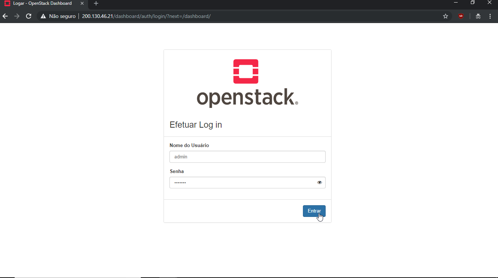Figure 16. Login no OpenStackVocê verá o dashboard de configuração do OpenStack. Navegue pelas abas e janelas para ambientar-se com a ferramenta.
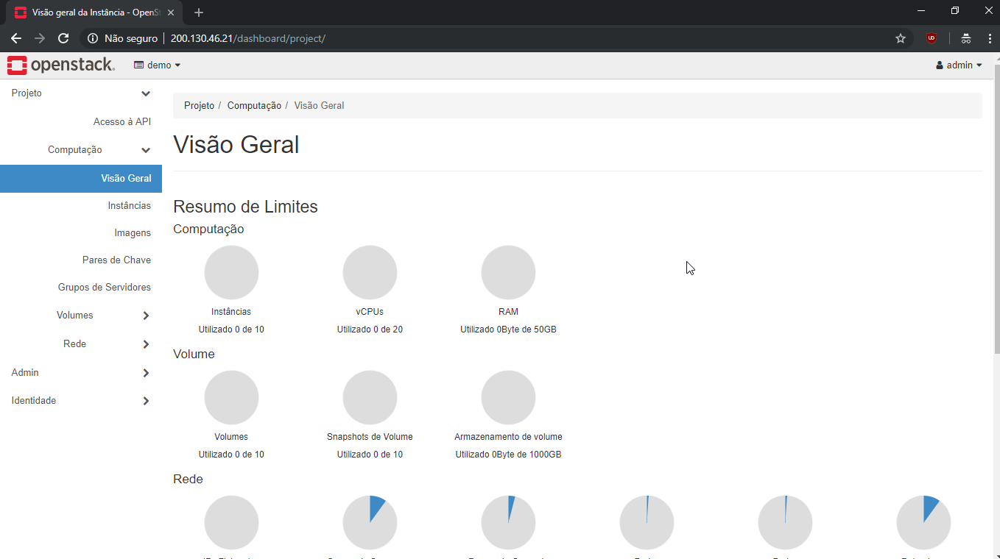Figure 17. Dashboard do OpenStack -
Vamos criar uma máquina virtual no OpenStack. Embora seja possível utilizar imagens ISO e realizar o processo de instalação, como fizemos com os demais hypervisors, o método recomendado no OpenStack é que usemos imagens de VM pré-prontas e configuradas para operar nesse ambiente — claro, é possível também criar imagens customizadas de acordo com a necessidade específica de sua organização.
A página https://docs.openstack.org/image-guide/obtain-images.html lista maneiras de obter imagens de máquinas virtuais de diferentes sistemas e distribuições populares.
Siga as orientações do instrutor para fazer o download da imagem de VM da distribuição Debian Linux. Em seguida, acesse Projeto > Computação > Imagens > Criar Imagem.
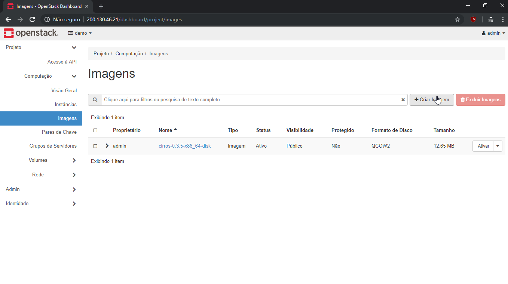Figure 18. Criação de imagem de VM, parte 1Defina um nome para a imagem, e navegue em seu computador até o local onde se encontra a imagem
qcow2do Debian. Mantenha o formato QCOW2 - Emulador QEMU, e clique em Criar Imagem.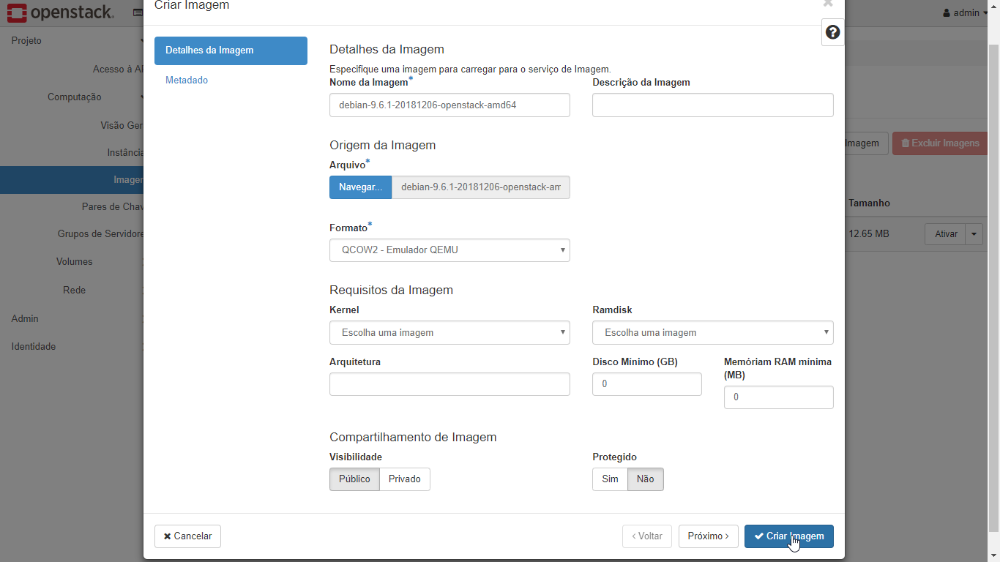Figure 19. Criação de imagem de VM, parte 2Após um curto tempo de upload, a imagem será criada, como mostrado abaixo.
 Figure 20. Criação de imagem de VM, concluído
Figure 20. Criação de imagem de VM, concluído -
Vamos agora criar uma instância de execução dessa imagem: acesse Projeto > Computação > Instâncias > Disparar Instância.
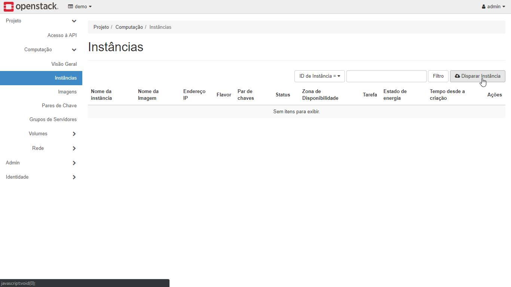Figure 21. Criando instâncias, parte 1Em Detalhes, defina o nome da instância (no exemplo, usamos
debian9-ostk-dX-gX).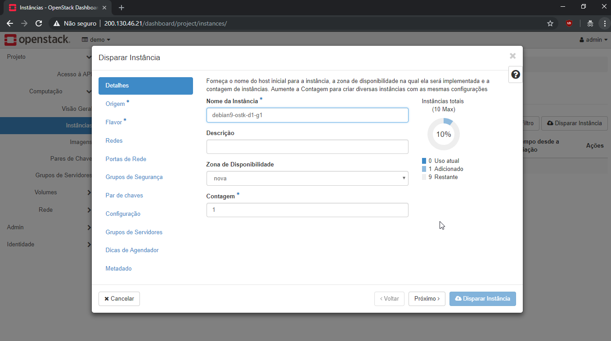Figure 22. Criando instâncias, parte 2Em Origem, clique na seta para cima para selecionar a imagem do Debian que foi adicionada ao OpenStack no passo anterior.
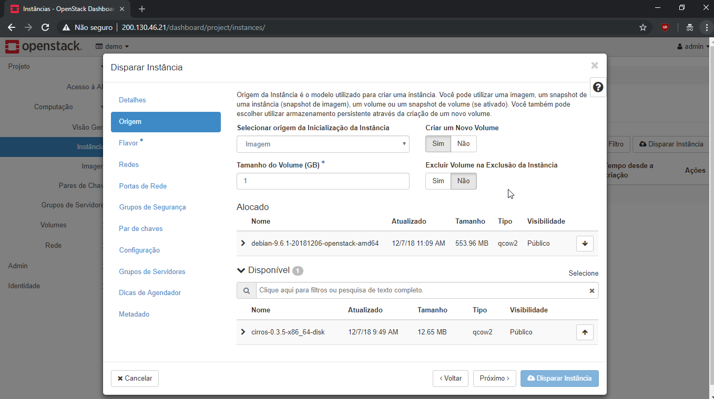Figure 23. Criando instâncias, parte 3Em Flavor, vamos escolher o "sabor" (efetivamente, a alocação de recursos) da nova instância. Clique na seta para cima para selecionar o flavor
ds512M, como ilustrado abaixo. Figure 24. Criando instâncias, parte 4
Figure 24. Criando instâncias, parte 4Agora, iremos configurar o acesso SSH à instância que será criada. Recomenda-se o uso do Cygwin neste passo, já que a configuração do cliente SSH é significativamente mais fácil. Em sua máquina física, acesse o Cygwin com sua conta de usuário local e crie um par de chaves assimétricas com o comando
ssh-keygen:adr-010@DESKTOP-3GP5RKE ~ $ ssh-keygen -t rsa Generating public/private rsa key pair. Enter file in which to save the key (/home/adr-010/.ssh/id_rsa): Created directory '/home/adr-010/.ssh'. Enter passphrase (empty for no passphrase): Enter same passphrase again: Your identification has been saved in /home/adr-010/.ssh/id_rsa. Your public key has been saved in /home/adr-010/.ssh/id_rsa.pub. The key fingerprint is: SHA256:mDhg20jSFPHwwq6FzGy4WPyCXRcsMdWWRIPy6tOM7o4 adr-010@DESKTOP-3GP5RKE The key's randomart image is: +---[RSA 2048]----+ | =oo..=+. | | + +.+. +. | |. B +oo. | |=B * o.+ | |o=B =.+ S | |oB o.o | |= o..+ | | o+ o | | E++. | +----[SHA256]-----+
Imprima na tela a chave pública do par recém-gerado, com o comando a seguir:
adr-010@DESKTOP-3GP5RKE ~ $ cat ~/.ssh/id_rsa.pub ssh-rsa AAAAB3NzaC1yc2EAAAADAQABAAABAQDPxvsqAO0fvRMOpwtOui+fdVxCJWcVHRzuMP5he9Xp7zGCZaWQhMlAgXbq4hOWKU9zKHcKviRPEPTIwb3uyV50GiQqiX3dYsUNkfMlFyuSPGhbDDgQjS0vMES+eOZ/mekqGL8UAhDJric3rcOMQutMuk0KVLM5lQndOoVIVRMCyOOcraVU8zmV1IyGLPWdPKlFdY12qGw6wJcY0YmzQDLP/8RzK8cZ/s5zYYhd6xl9sFwgG5iovoxVmeereALzZhcMcZXUj/pUPyTBLVRwBxd/wER7r5t7B78yqokLDpXSPxe+cuofezX1OwMeJGUZe6DDO5g2cy9uOshk9Z3YKhAN adr-010@DESKTOP-3GP5RKE
Copie para a área de transferência a saída do comando acima, desde
ssh-rsa (…)até o final da linha. Agora, volte para a interface do OpenStack e acesse Par de chaves > Importar par de chaves.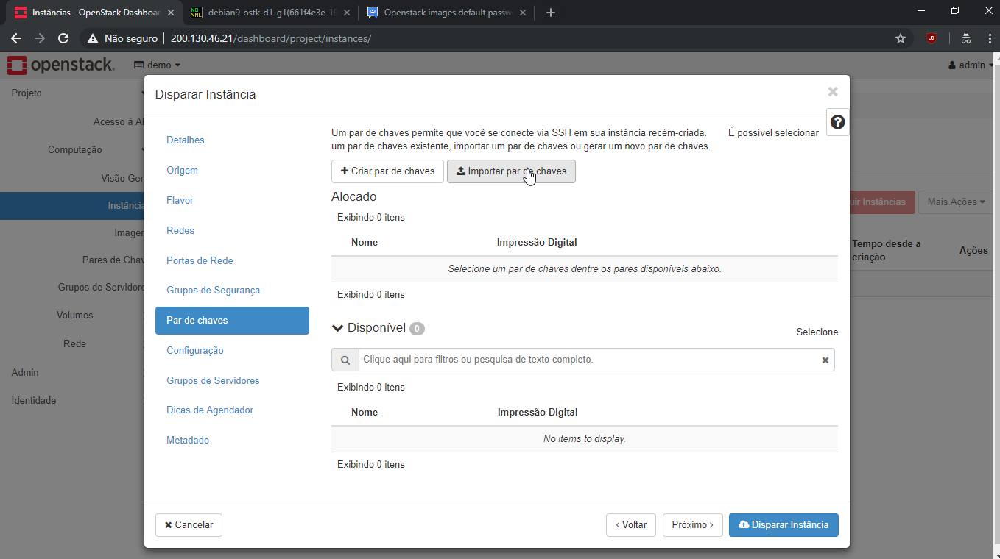Figure 25. Criando instâncias, parte 5Escolha um nome sugestivo para o par de chaves, e cole o conteúdo da chave pública na caixa de texto na parte inferior da janela, como mostrado abaixo. Em seguida, clique em Importar par de chaves.
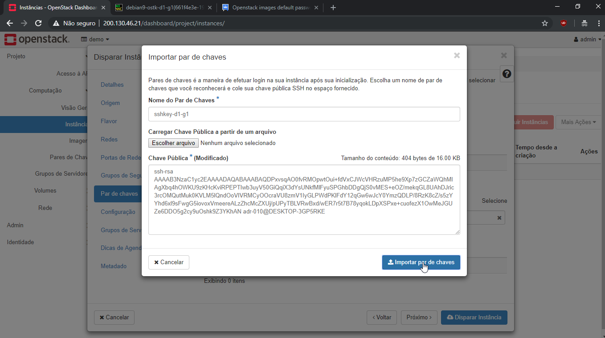Figure 26. Criando instâncias, parte 6Finalizado esse processo, clique em Disparar Instância.
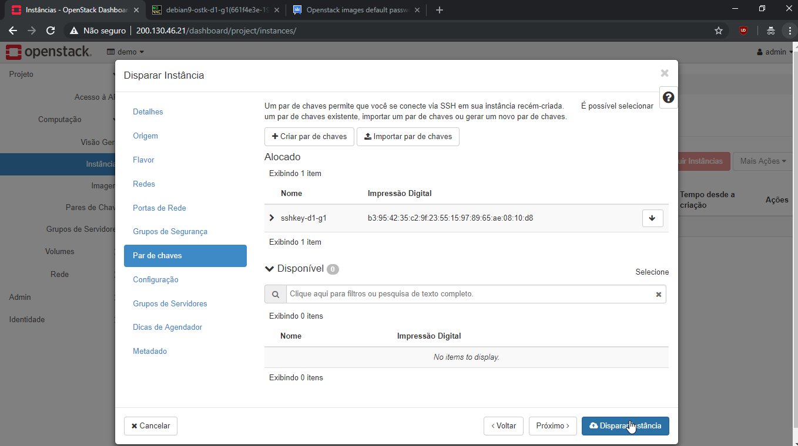Figure 27. Criando instâncias, finalizadoApós algum tempo, a instância será iniciada, como mostrado a seguir.
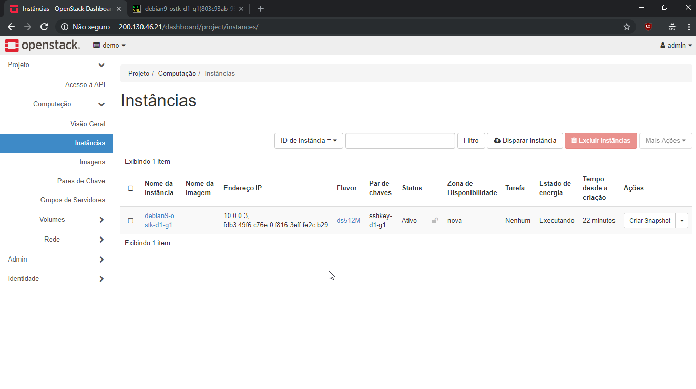Figure 28. Instância em operaçãoNote que a instância possui apenas um IP privado alocado (10.0.0.3 no exemplo), o que impossibilita que a acessemos de forma direta, ainda. Vamos resolver isso.
-
Para configurar a conectividade de rede, acesse Projeto > Rede > IPs Flutuantes > Alocar IP para Projeto.
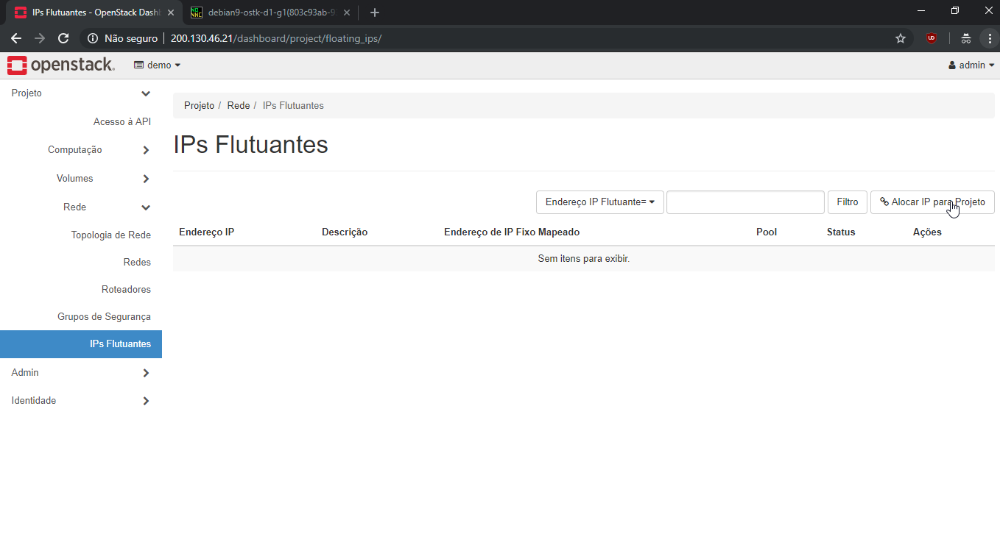Figure 29. Configuração de IPs flutuantes, parte 1Escolha o Pool como public, e defina um nome qualquer para o IP flutuante. Em seguida, clique em Alocar IP.
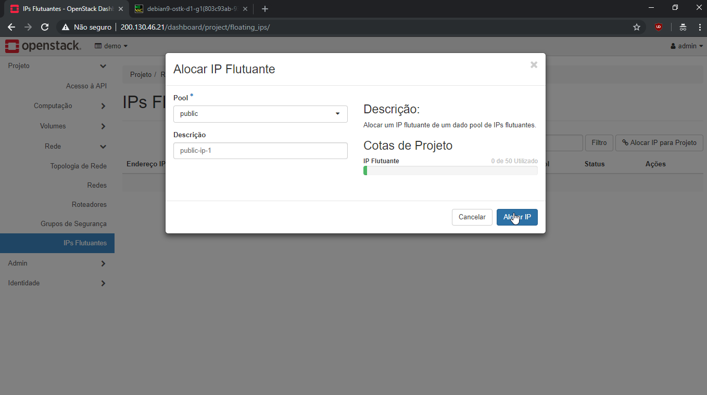Figure 30. Configuração de IPs flutuantes, parte 2O IP flutuante será criado (no exemplo abaixo, 172.24.4.109). Para alocá-lo à instância em execução, clique em Associar.
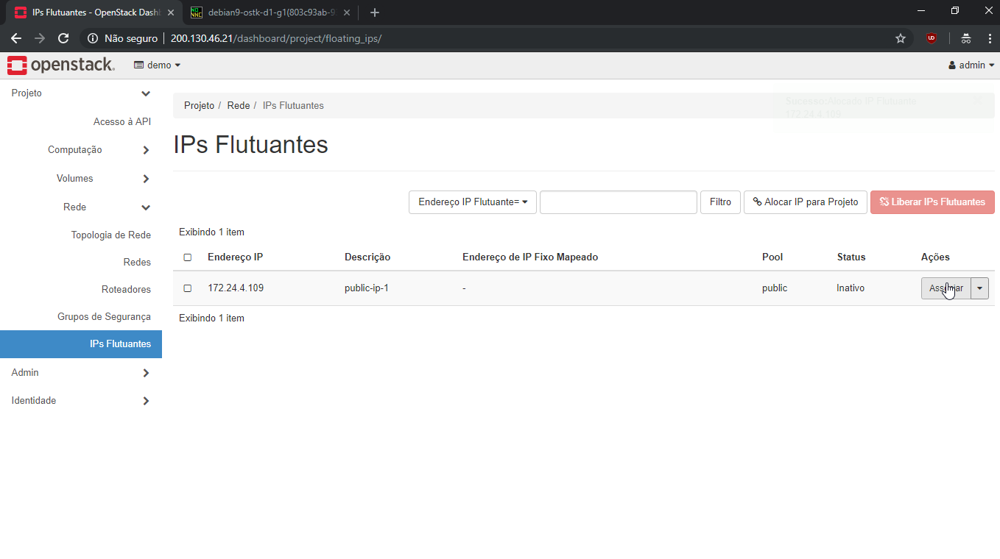Figure 31. Configuração de IPs flutuantes, parte 3Selecione o endereço IP, e em seguida o nome da instância à qual o IP será associado (no caso, a instância criada no passo anterior desta atividade).
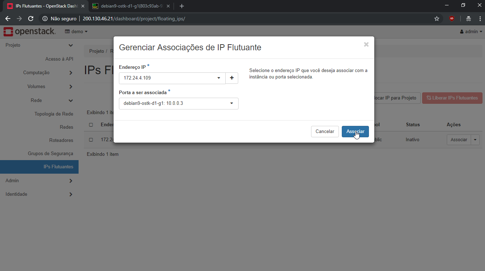Figure 32. Configuração de IPs flutuantes, parte 4De volta à tela de instâncias, note que agora a instância possui dois endereços associados: o endereço privado, antigo, e o IP flutuante que acabamos de alocar a ela.
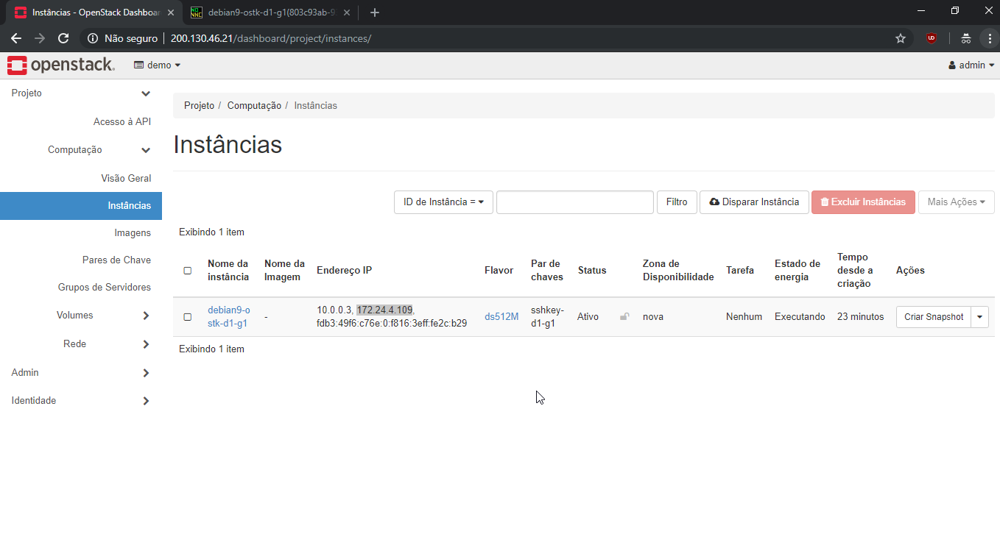Figure 33. Configuração de IPs flutuantes, concluído -
Temos que configurar regras no firewall virtual que permitam o acesso à instância. Acesse Projeto > Rede > Grupos de Segurança > default > Administrar regras.
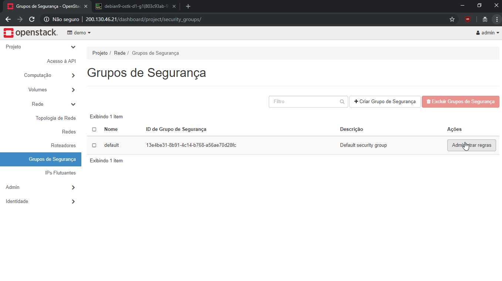Figure 34. Criando regras no firewall virtual, parte 1Agora, clique em Adicionar Regra.
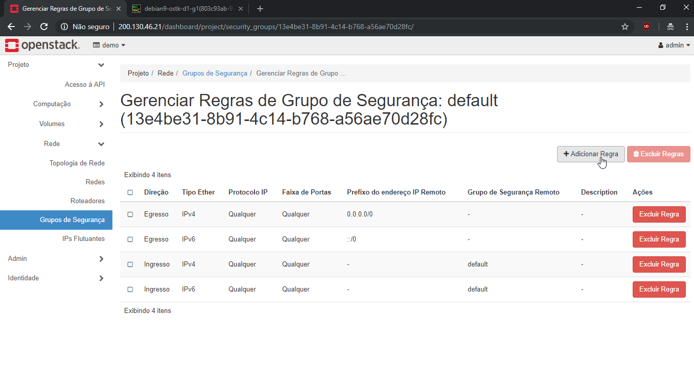Figure 35. Criando regras no firewall virtual, parte 2Primeiro, vamos fazer uma regra que permita resposta a
ping. Selecione a regra Tudo ICMP, crie uma descrição qualquer, indique a direção Ingresso e defina que o endereço remoto será dado no formato CIDR, igual a0.0.0.0/0.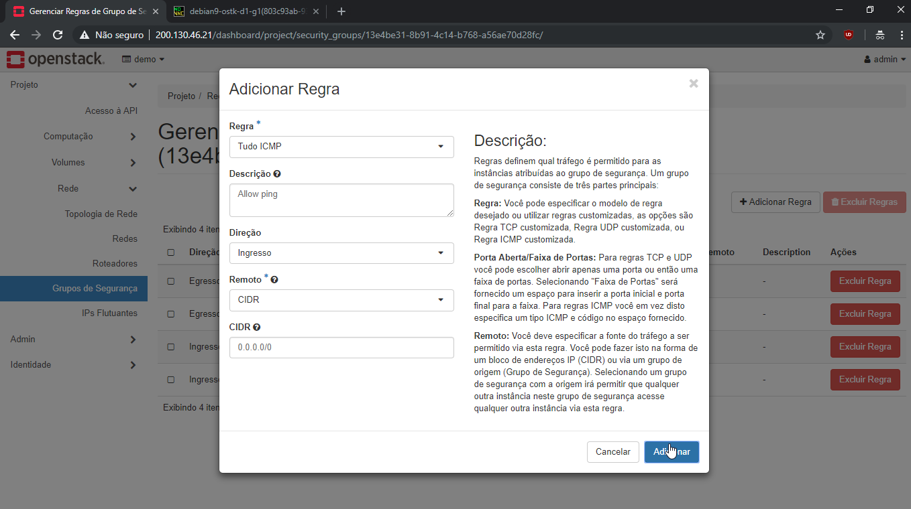Figure 36. Criando regras no firewall virtual, parte 3Crie uma segunda regra, permitindo SSH, com parâmetros iguais à anterior.
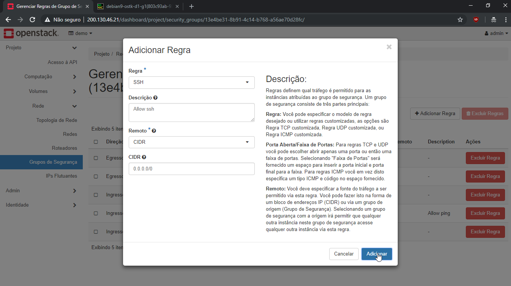Figure 37. Criando regras no firewall virtual, parte 4 -
Para visualizar a faixa de rede à qual as regras criadas acima se aplicam, acesse Projeto > Rede > Redes > public. Note, no exemplo abaixo, que a faixa pública é a rede 172.24.4.0/24.
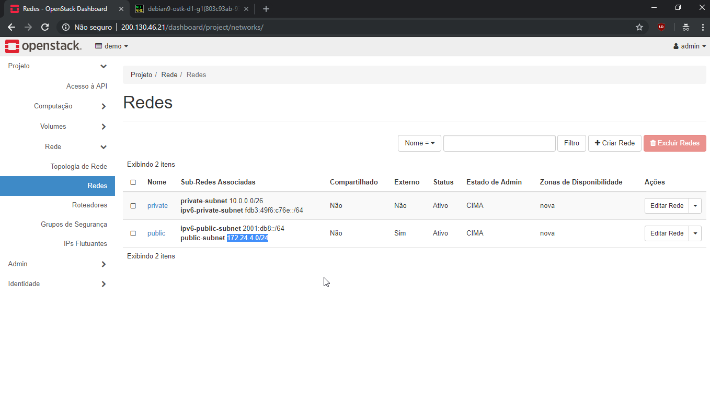Figure 38. Definindo o escopo da faixa públicaÉ possível ainda visualizar uma representação gráfica das redes e switches virtuais configurados no OpenStack na aba Topologias de Rede.
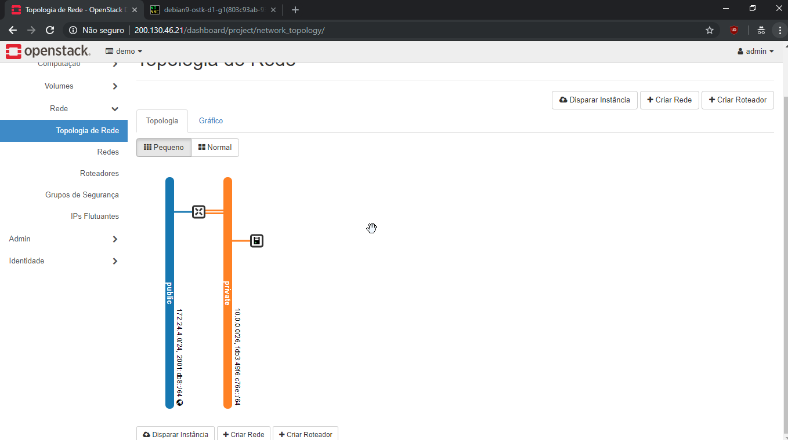Figure 39. Topologia de rede no OpenStack -
Vamos adicionar uma rota estática no Windows para permitir o acesso à instância criada no OpenStack. Para isso, o primeiro passo é saber o IP da interface de rede externa do hypervisor, visível através da URL de acesso ao Horizon ou via linha de comando:
root@ostk-d1-g1:~# ip a s eno1 | grep ' *inet ' inet 200.130.46.21/24 brd 200.130.46.255 scope global dynamic eno1Em sua máquina física, abra o prompt de comando como administrador.
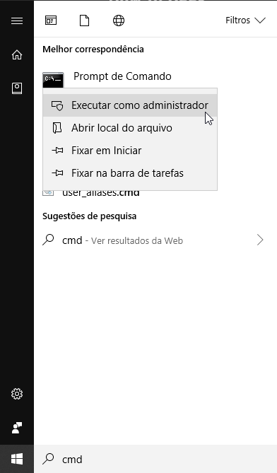Figure 40. Prompt administrativoPara adicionar uma rota estática, digite o comando
route ADD PUBLICNETWORK MASK 255.255.255.0 OPENSTACKIP, substituindo os valoresPUBLICNETWORKpela faixa da redepublicno OpenStack, eOPENSTACKIPpelo endereço IP do hypervisor do OpenStack. Veja um exemplo: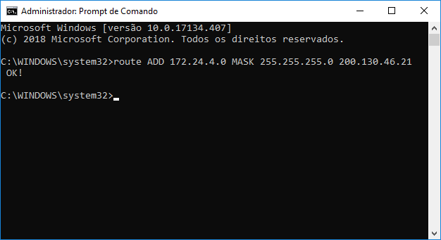Figure 41. Adicionando rota estática -
Feito isso, podemos acessar! Crie uma sessão SSH para o IP flutuante da instância Debian, usando o usuário
debian:adr-010@DESKTOP-3GP5RKE ~ $ ssh debian@172.24.4.109 The authenticity of host '172.24.4.109 (172.24.4.109)' can't be established. ECDSA key fingerprint is SHA256:45IOyBVJxjFl6qkMkoNBSTY5JvuVkER+vFpUCg32B1k. Are you sure you want to continue connecting (yes/no)? yes Warning: Permanently added '172.24.4.109' (ECDSA) to the list of known hosts. Linux debian9-ostk-d1-g1 4.9.0-8-amd64 #1 SMP Debian 4.9.130-2 (2018-10-27) x86_64 The programs included with the Debian GNU/Linux system are free software; the exact distribution terms for each program are described in the individual files in /usr/share/doc/*/copyright. Debian GNU/Linux comes with ABSOLUTELY NO WARRANTY, to the extent permitted by applicable law. debian@debian9-ostk-d1-g1:~$
Perfeito! Determine com qual usuário você está operando:
debian@debian9-ostk-d1-g1:~$ whoami debian
E o hostname da máquina que foi acessada:
debian@debian9-ostk-d1-g1:~$ hostname debian9-ostk-d1-g1
Observe que apenas o IP privado é mostrado dentro das configurações de rede da VM. O mapeamento do IP flutuante é feito de forma externa, pela gestão de switches virtuais do OpenStack.
debian@debian9-ostk-d1-g1:~$ ip a s 1: lo: <LOOPBACK,UP,LOWER_UP> mtu 65536 qdisc noqueue state UNKNOWN group default qlen 1 link/loopback 00:00:00:00:00:00 brd 00:00:00:00:00:00 inet 127.0.0.1/8 scope host lo valid_lft forever preferred_lft forever inet6 ::1/128 scope host valid_lft forever preferred_lft forever 2: eth0: <BROADCAST,MULTICAST,UP,LOWER_UP> mtu 1450 qdisc pfifo_fast state UP group default qlen 1000 link/ether fa:16:3e:2c:0b:29 brd ff:ff:ff:ff:ff:ff inet 10.0.0.3/26 brd 10.0.0.63 scope global eth0 valid_lft forever preferred_lft forever inet6 fdb3:49f6:c76e:0:f816:3eff:fe2c:b29/64 scope global mngtmpaddr dynamic valid_lft 86396sec preferred_lft 14396sec inet6 fe80::f816:3eff:fe2c:b29/64 scope link valid_lft forever preferred_lft forever
4) Trabalhando com snapshots no OpenStack
-
Vamos atribuir um "propósito" para nossa instância: um servidor web. Para instalar pacotes, precisamos primeiro configurar o DNS local da máquina, via arquivo
/etc/resolv.conf. Execute o comando a seguir:root@debian9-ostk-d1-g1:~# t=$( mktemp ) ; \ grep -v '^nameserver' /etc/resolv.conf > t ; \ echo -e 'nameserver 8.8.8.8\nnameserver 8.8.4.4' >> t ; \ mv t /etc/resolv.conf ; \ unset t
-
Agora, atualize a lista de pacotes disponíveis no repositório remoto e instale o servidor web Nginx:
root@debian9-ostk-d1-g1:~# apt-get update && apt-get install nginx -y
-
Lembre-se que não criamos regras no firewall virtual para permitir acesso HTTP. Acesse Projeto > Rede > Grupos de Segurança > default e crie uma nova regra para permitir acesso na porta TCP/80:
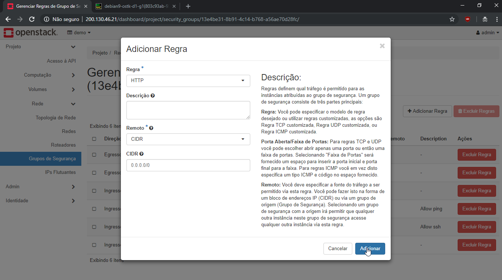Figure 42. Criação de regra HTTP -
No navegador da sua máquina física, acesse o endereço IP flutuante da instância Debian — você deverá ver a página inicial do servidor web.
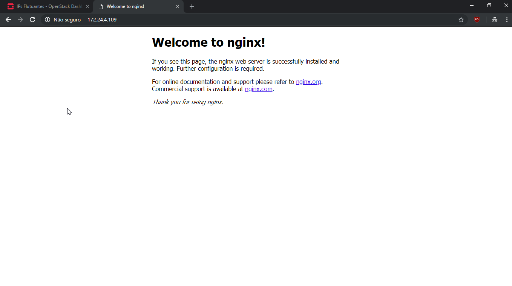Figure 43. Servidor web Nginx acessível na instância -
Vamos criar um snapshot da instância e guardar seu estado atual. Em Projeto > Computação > Instâncias, clique em Criar Snapshot.
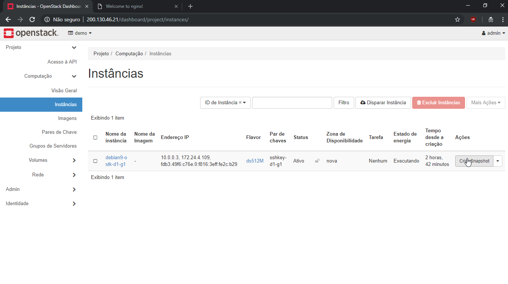Figure 44. Criação de snapshot, parte 1Defina um nome apropriado para o snapshot.
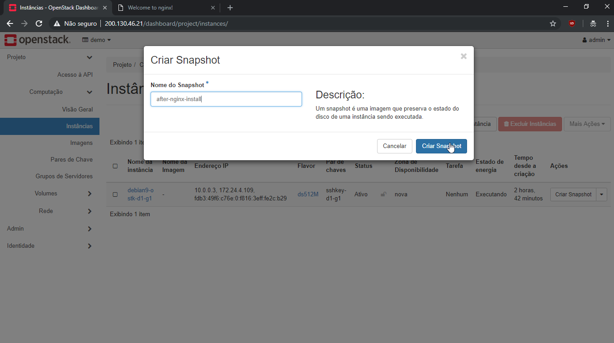Figure 45. Criação de snapshot, parte 2Diferentemente de outros sistemas de virtualização que trabalhamos até aqui, note que o snapshot da instância é armazenado como uma imagem em separado — não necessariamente associada à instância original. Acesse Projeto > Computação > Imagens para visualizá-lo.
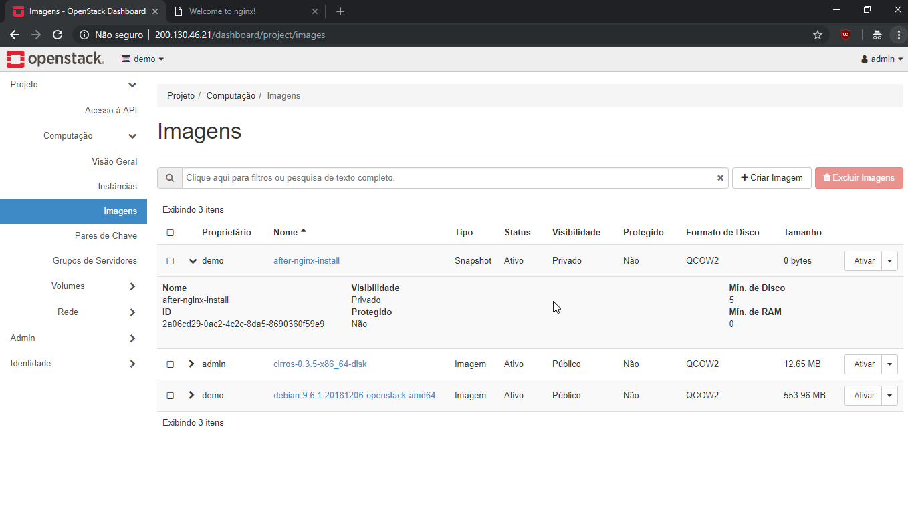Figure 46. Criação de snapshot, concluído -
Vamos promover uma alteração na instância para testar a funcionalidade de snapshots. Logado como
rootvia SSH na instância, execute o comando abaixo para sobrescrever o arquivoindex.htmldo servidor web:root@debian9-ostk-d1-g1:~# echo "index.html post-snapshot" > /var/www/html/index.nginx-debian.html
Atualize a página web com o endereço IP flutuante da instância — note que o conteúdo da página foi alterado.
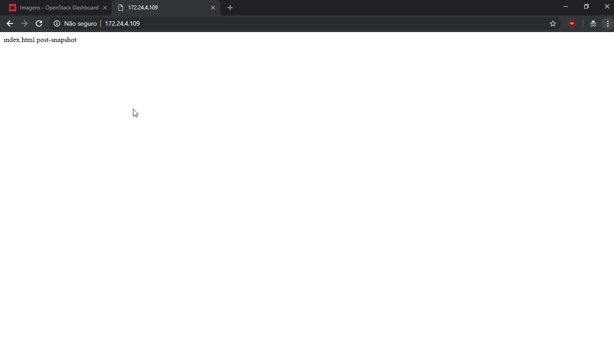Figure 47. Conteúdo da página web alterado -
Vamos restaurar o snapshot. Em Projeto > Computação > Imagens, localize o nome do snapshot criado anteriormente e então clique em Ativar.
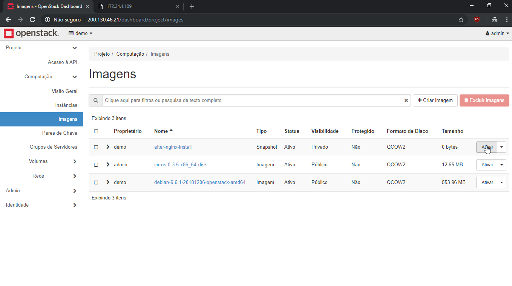Figure 48. Ativando snapshot, parte 1Note que abre-se uma janela de criação de instância exatamente igual à que usamos ao criar a instância Debian original. De fato, no OpenStack snapshots são tratados como imagens quaisquer, sem ligação com a instância original. Defina um nome para a nova instância.
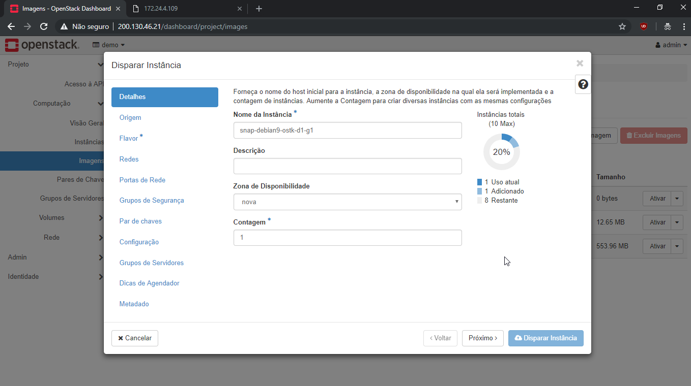Figure 49. Ativando snapshot, parte 2Em Flavor, defina o tamanho da instância como
ds512M, novamente. Clique em Disparar Instância. Após algum tempo, a instância será criada, como mostrado abaixo.Figure 50. Ativando snapshot, concluído -
Em Projeto > Computação > Instâncias, localize a instância Debian original e selecione Remover IP Flutuante.
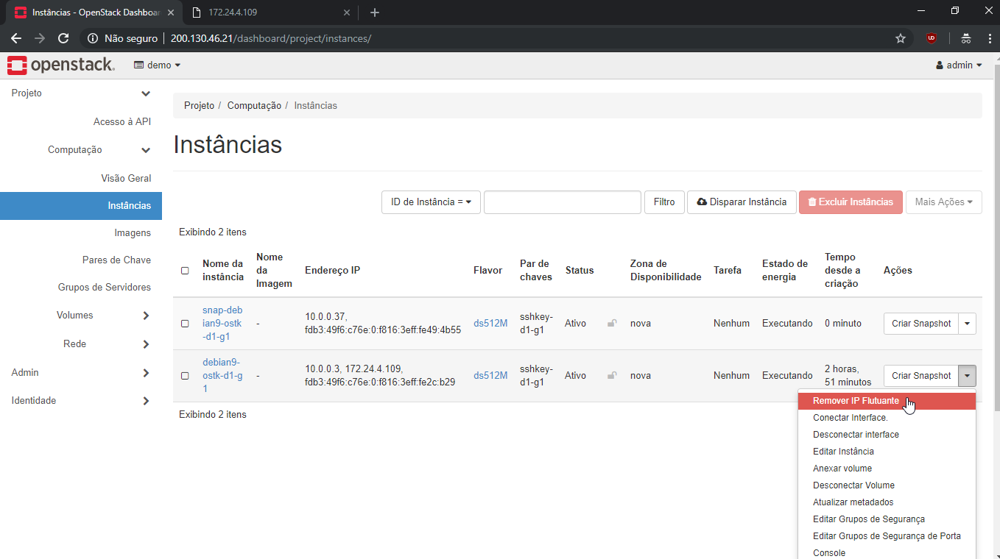Figure 51. Alternando IP flutuante para o snapshot, parte 1Confirme a remoção do IP, e não marque a caixa Release Floating IP. Clique em Desassociar.
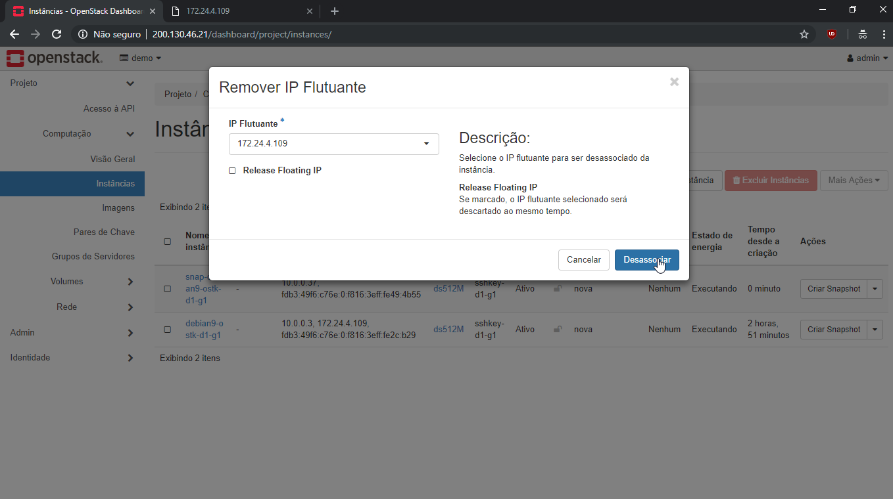Figure 52. Alternando IP flutuante para o snapshot, parte 2De volta à tela anterior, localize a instância do snapshot recém-criado e selecione Associar IP Flutuante. Atribua à essa instância o IP flutuante que foi removido da instância Debian original.
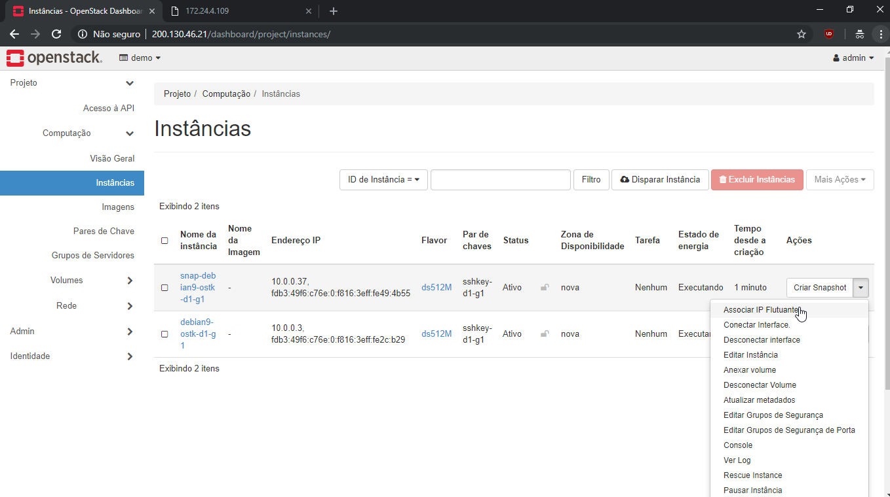Figure 53. Alternando IP flutuante para o snapshot, parte 3 -
Atualize a página web em seu navegador. Você deverá ver a página inicial padrão do servidor web Nginx, inalterada.
Figure 54. Acessando servidor web do snapshot -
Para "emular" o comportamento de um snapshot em um sistema de virtualização tradicional, você pode navegar até Projeto > Computação > Instâncias, localizar a instância Debian original e clicar em Excluir Instâncias.
Figure 55. Removendo instância originalApós a remoção, restará apenas o snapshot. De certa forma, é como se tivéssemos "restaurado" a instância para sua versão do snapshot.
Figure 56. Apenas instância do snapshot restando no OpenStack
5) Conhecendo outras funcionalidades do OpenStack
No menu Admin podemos configurar aspectos administrativos do OpenStack, como limites de recursos para usuários, imagens de instâncias disponíveis e flavors. Vamos explorar algumas dessas capacidades.
-
Em Admin > Computação > Hipervisores é possível visualizar todos os hypervisors sendo gerenciados pelo OpenStack, e adicionar novos se desejado. Como estamos usando um ambiente específico para desenvolvimento, não iremos adicionar novos hypervisors neste momento.
O tutorial disponível em https://docs.openstack.org/devstack/latest/guides/multinode-lab.html mostra um exemplo de configuração para um laboratório multi-node com o OpenStack.
Figure 57. Lista de hypervisors disponíveis -
A lista de flavors de instância disponibilizados para os usuários pode ser visualizada e customizadas através do menu Admin > Computação > Sabores.
Figure 58. Lista de flavors de instância -
As quotas de recursos disponibilizados aos usuários do OpenStack podem ser customizadas em Admin > Sistema > Padrões.
Figure 59. Edição de quotas de recursosPara realizar edições de quota com maior grau de granularidade (p.ex., quotas diferenciadas por usuários e grupos) é necessário interagir com os clientes de linha de comando do OpenStack, como abordado em https://docs.openstack.org/nova/latest/admin/quotas.html .
-
Podemos agrupar elementos do OpenStack em Projetos, Grupos, Usuários e Papéis. Os Projetos irão ditar quais conjuntos de recursos podem ser usados por um número de instâncias:
Figure 60. Lista de projetosUsuários, por sua vez, podem ser usados para garantir acesso ao OpenStack a diferentes pessoas, implementando uma cloud privada do tipo IaaS (Infrastructure as a Service).
Figure 61. Lista de usuáriosGrupos podem ser usados para reunir usuários com um mesmo perfil de uso, ou por departamentos:
Figure 62. Lista de gruposFinalmente, pode-se usar Papéis para atribuir diferentes níveis de permissão de acesso na interface do OpenStack a Grupos de usuários:
Figure 63. Lista de papéis -
O OpenStack é uma solução largamente utilizada por empresas ao redor do mundo para implementar soluções de clouds públicas, híbridas e privadas. Isso fica bastante claro ao visualizarmos suas capacidades de accounting e contabilização de horas de uso de CPU, memória e disco no menu Admin > Visão Geral.
Figure 64. Taxas de uso de recursos por projetoEsse sistema de contabilização permite suporte ao modelo pay-by-use, muito popular em provedores de clouds públicas. Confira abaixo uma lista de fornecedores de clouds que utilizam o OpenStack como base para sua infraestrutura:
-
Clouds públicas: https://www.openstack.org/marketplace/public-clouds/
-
Clouds privadas hosted: https://www.openstack.org/marketplace/hosted-private-clouds/
-
Clouds privadas gerenciadas remotamente: https://www.openstack.org/marketplace/remotely-managed-private-clouds/
-